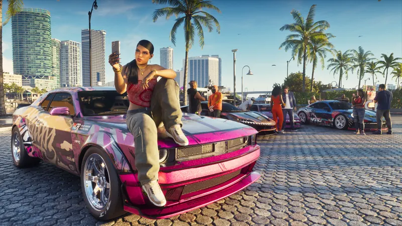

¿Qué incluye GTA+ en GTA 6?
Respuesta corta
GTA+ da en GTA 6 un coche Elegy exclusivo, un garaje en Crosstown con armería, Scooter Bros Premium, transporte público gratis y un 10 % en la venta de vehículos, con descuentos parecidos en varias tiendas, según Vandal.

Ventajas, según Vandal
- Un Elegy exclusivo.
- Un garaje en Crosstown con armería y un sitio para vender objetos robados.
- Scooter Bros Premium, el servicio que te acerca el coche.
- Transporte público gratis.
- Un 10 % en la venta de vehículos y descuentos parecidos en varias tiendas de Leonida (Vandal no dice cuáles).
El mes incluido con la reserva
Según Rockstar, las compras digitales hechas antes del 20 de noviembre de 2026 incluían un mes de GTA+, y el 19 de noviembre confirmó que GTA+ ya incluye ventajas para GTA 6. En Xbox, la ficha de la tienda da 180 días desde la reserva para canjearlo. Después se renueva pagando: si no quieres seguir, revisa la renovación automática en tu cuenta.
¿Merece la pena?
No es necesario para la historia. Te ahorra tiempo con el garaje y los desplazamientos. Si dudas, empieza sin él y consulta cómo ganar dinero al empezar.
Fuentes
- Vandal: GTA 6 en directo (lanzamiento)
- Rockstar Newswire: Grand Theft Auto VI ya está disponible (19-11-2026)
- Rockstar Support: ediciones y versiones de GTA VI
- Tienda de Xbox (España): GTA VI
Resumen redactado por 6 Estrellas a partir de las fuentes citadas, revisadas el 20 de noviembre de 2026. Si ves un error, cuéntanoslo desde Quiénes somos.